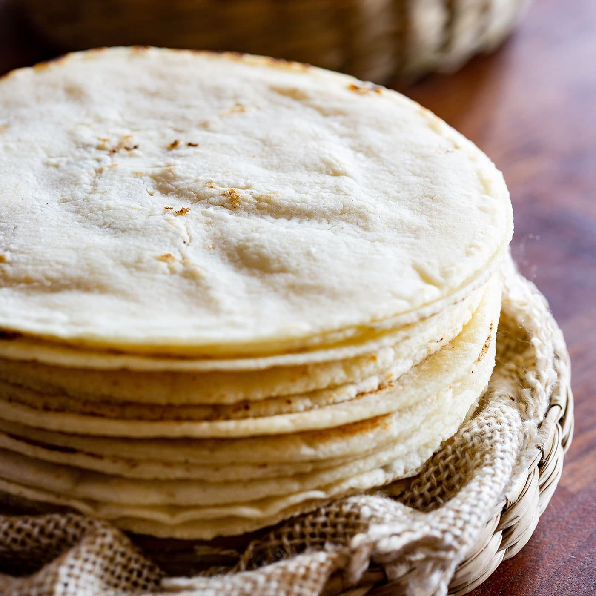

Tortilla

Description
Similar to Italian piadina, or to the chapati of the Indian tradition, tortillas are substantially a unleavened bread, usually round in shape, made in different diameters.
Mexican tortillas are made with wheat or corn flour. Although they both belong to the Mexican and Tex-Mex culinary tradition, the corn tortilla is undoubtedly the most typical one.
As a matter of fact, corn is the basic food in Southern America cuisine, handed down since ancient times, long before Spanish colonization.
Ingredients
- nixtamalised maize 500 g
- sufficient water
- salt to taste
Steps
- Mix the corn dough with a little water and salt to taste, kneading it until you get a soft, manageable paste that doesn't fall apart.
- Form with the mass small spheres. Place a plastic in a metal or wood press and set a dough dial on top; cover it with another plastic the same.
- To make an omelette, press the dough sphere firmly but not too strong, to prevent the omelette from sticking to the plastic.
- Open the press and take off the top plastic carefully.
- Lift the omelette along with the plastic below; with one hand put the tortilla on the fingers of the other hand and remove the plastic.
- Sploat the omelette on a metal or mud comal on the fire and previously heated.
- Let the tortilla roar over the grid for about 15 seconds. Turn the omelette over and leave it for 30 more seconds. Turn it back and take 15 seconds more.
- Wait till the tortilla is inflated (due to the output of the remaining moisture in the dough). If it doesn't happen in the next few seconds after you've last flipped it, give you a slight blow to the surface with your fingers.